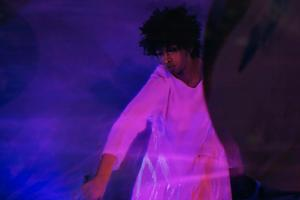
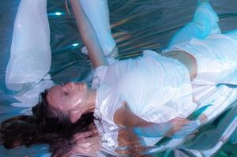

为 The Interconnections 展览的特别开幕，我们创作了一段融合节奏与编排的独特作品。表演包含两个段落：五位才华横溢的音乐家带来的现场氛围与电子音乐，以及三位舞者的现代舞作品——鼓励身体与心灵的共同参与。表演之后，艺术家 Frey Su 将分享她进入冥想的旅程，策展人 Minglu Zhong 则与观众探讨这场沉浸体验背后的概念。活动面向全年龄，免费、适合家庭，提供新鲜的艺术体验与互动元素。



表演团队
作曲Junyang (Jim) Li
音乐统筹Zizhan (Max) Wu
键盘Junlin Li
贝斯Yizhen (Zoe) Lyu
电子乐André DeGrenier
舞者Hebe Wang · Angelina Mille · Nat Scott
“Serene Flow”——aSway（4:30–4:45）
这首作品的作曲家 Junyang (Jim) Li 分享道：“我想与艺术家对精神流动与冥想能量的表达相连接，释放焦虑与压力，拥抱真实的自我。焦点只在于当下时刻、我们内在的流动与感知。”这是 Frey 艺术作品的音乐合成，创造出充满内省能量的广阔冥想空间，引导自我再发现与超越体验。Jim 与 Max 在环绕声环境中以环境音打造和谐的宇宙音景。Zizhan (Max) Wu 阐述道：“当音乐像一场冥想那样缓慢有机地展开，观众沉浸于内在能量与自我发现的空间，表演者则通过自由即兴加入这段旅程，引导他们走向最终的超越。”
“Serene Flow”——aRouse（4:45–5:00）
这段编舞邀请观众逃离日常生活的需求，重新夺回一段个人反思的时光。置身于装置之间，每位舞者体现一种独特品质，以锐利的几何母题建立新的联结，通过动作传达这些品质的集体力量。编舞 Hebe Wang 描述道：“与 Frey 的作品相呼应，我们的表演探索精、气、神和谐相聚，旨在淹没见证者的灵魂、服务于观众。”她补充道：“我们鼓励观众随心所欲地与表演者互动，加入我们的呼吸练习与冥想。”